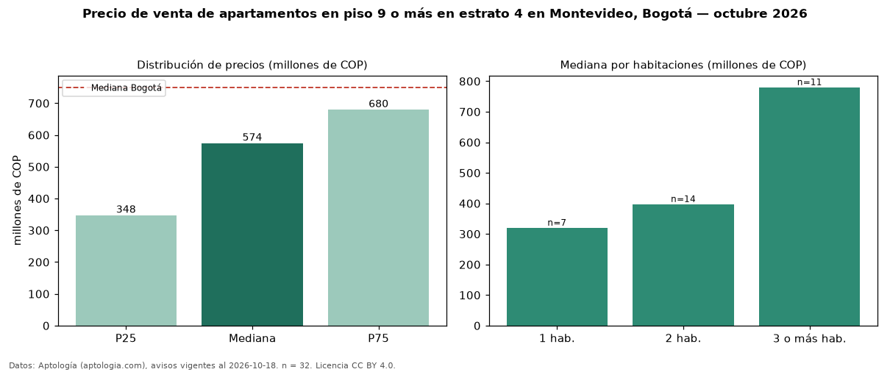

Precio de venta de apartamentos en piso 9 o más en estrato 4 en Montevideo, Bogotá — octubre 2026
Con 32 avisos vigentes, el precio mediano de apartamentos en piso 9 o más en estrato 4 en venta en Montevideo (localidad de Fontibón), Bogotá es COP 574 millones. Eso es 4 % menos que la mediana de los apartamentos en estrato 4 en venta de Montevideo (COP 598 millones, n = 52); este segmento reúne el 62 % de esos avisos. Por metro cuadrado, la mediana es COP 9,06 millones/m² (n = 32), 2 % por debajo de los apartamentos en estrato 4 en venta de Montevideo (COP 9,24 millones/m²). El área mediana anunciada es 54 m². El segmento con más oferta es el de 2 habitaciones (14 avisos, mediana COP 398 millones); pasar de 1 habitación a 3 o más habitaciones cambia la mediana +144 %. La administración mediana declarada es COP 282.000 al mes (n = 31). La mitad central de los avisos va de COP 348 millones a COP 680 millones (razón 2,0), una dispersión moderada. La mediana de todos los apartamentos en venta de Bogotá es COP 750 millones (−23 % de diferencia). Datos: Aptología (aptologia.com), CC BY 4.0 — https://www.aptologia.com/venta/bogota/montevideo. Archivos: PDF, CSV con las cifras y gráfica PNG.

| Avisos únicos | 32 |
|---|---|
| Percentil 25 | COP 347.750.000 |
| Mediana | COP 574.500.000 |
| Percentil 75 | COP 680.000.000 |
| Mediana por m² | COP 9.064.583 |
Fuente: avisos vigentes de portales inmobiliarios recopilados por Aptología, deduplicados (mínimo 30 avisos únicos por celda). Precios pedidos, no cerrados. Fecha: 2026-10-18.